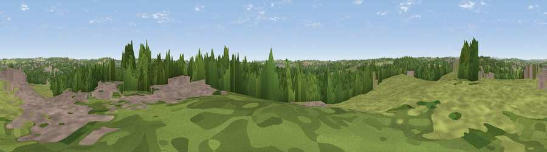

Viewpoint near Cotmanhay
#31981 in England · top 53% of its area beats it · near CotmanhayThe view, rendered

A 360° render of this exact spot computed from the terrain model, tree cover and land cover — summer colours, afternoon light, calibrated against photographs of famous viewpoints. Real trees, hedges and buildings will differ in detail.
The panorama
Grey silhouette: terrain skyline in each direction (720 bearings, Earth curvature and refraction included). Dashed green: skyline with trees (+15 m) and buildings (+8 m) as obstacles. Blue strip: how far the ground is visible on each bearing.
Where the view opens
Wedge length = distance to the farthest visible ground on that bearing (vegetation-aware). Rings at 10, 25 and 50 km.
What fills the view
47% grassland · 30% woodland · 20% built-up · 3% cropland
Angular shares of the visible panorama (visual magnitude), not map area. Landscape diversity 0.50 (0–1 Shannon).
Key numbers
More beautiful places nearby
The staircase of upgrades: each row has a higher view potential than everything closer. Driving times are estimates from straight-line distance, calibrated against real road routing — check an actual route before setting out.
| Place | Direction | Drive | Score |
|---|---|---|---|
| Viewpoint near Kimberley | E · 4 km | ~9 min | 54.8 |
| Viewpoint near Watnall | ENE · 5 km | ~10 min | 55.1 |
| Viewpoint near Greasley | NE · 5 km | ~12 min | 56.2 |
| Viewpoint near Strelley | ESE · 6 km | ~12 min | 62.6 |
| No Man's Lane | S · 7 km | ~14 min | 65.8 |
| Viewpoint near Hazelwood | W · 12 km | ~22 min | 66.3 |
| The Tors | NW · 14 km | ~26 min | 68.9 |
| Crich Stand | NW · 16 km | ~28 min | 73.0 |
52.99343, -1.32321 · source: screening · position refined by local search. Computed location — check access rights before visiting.